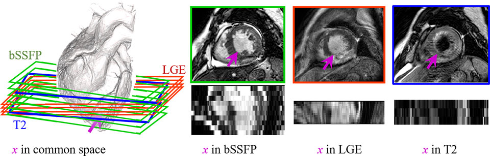
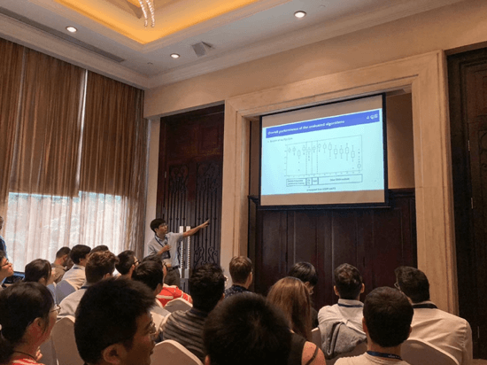
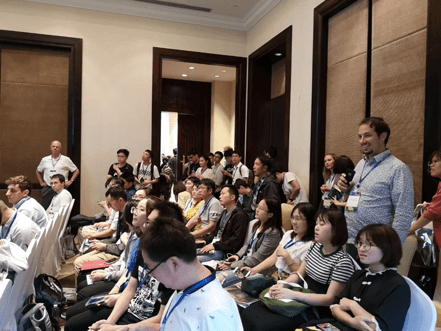
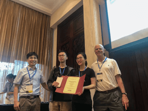

|  |  |  |
Clinical Background
Accurate computing, analysis and modeling of the ventricles and myocardium from medical
images is important, especially in the diagnosis and treatment management for patients suffering from
myocardial infarction (MI).
MRI is particularly used to provide imaging anatomical and functional information of heart, such as the
T2-weighted CMR which images the acute injury and ischemic regions, and the balanced-Steady State Free
Precession (bSSFP) cine sequence which captures cardiac motions and presents clear boundaries.
Particularly, LGE CMR can enhance the infarcted myocardium, appearing with distinctive brightness compared
with the healthy tissues. It is widely used to study the presence, location, and extent of MI in clinical
studies. Thus, delineating ventricles and myocardium from LGE CMR images is important.
However, the segmentation is still arduous, particularly due to the pathological myocardium from LGE CMR;
but manual delineation is generally time-consuming, tedious and subject to inter- and intra-observer
variations.
Motivation
This challenge aims at creating an open and fair competition for various research groups to
test and validate their methods, particularly for the multi-sequence ventricle and myocardium segmentation.
We provide 45 multi-sequence CMR images from patients who underwent cardiomyopathy. Each patient had been
scanned using the three CMR sequences, i.e. the LGE, T2 and bSSFP. The task of this challenge is to
segment the ventricles and myocardium from LGE CMR, combing with other two sequences (T2 and bSSFP) from
same patients, which can be used to assist the LGE CMR segmentation. This challenge is not only to
benchmark various segmentation algorithms, but also to cover the topic of general cardiac image
segmentation, registration and modeling.
Important date
Topic
The segmentation of ventricles and myocardium from LGE CMR:
Segmentation strategies
Direct segmentation on the LGE CMR dataset
Segmentation with the assistance from the other two
CMR sequences from the same patients
CMR sequences from the same patients
Others
Segmentation algorithms
Atlas based segmentation
Statistical shape model based segmentation
Deep learning segmentation
Others
Award
The best works will be awarded with prizes, and the selected papers
will be published in Lecture Notes in Computer Science (LNCS), Springer with STACOM workshop (see previous
proceedings).
Note: Paper, presentation and test results will all be taken into account when a piece of work is evaluated.
Result:Note: Paper, presentation and test results will all be taken into account when a piece of work is evaluated.